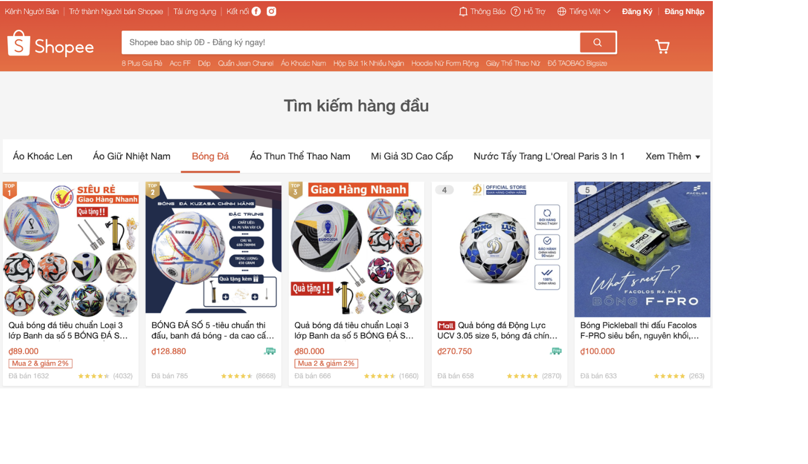

Các thuộc tính CSS được dùng ở hình trên
- CSS reset : để reset CSS mặc định của trình duyệt
- width: để chỉnh chiều rộng của các thẻ
- height: để chỉnh chiều cao các thẻ
- color: chỉnh màu cho chữ (#fcf7f5, #545454)
- background-color: chỉnh mày nền (#db5c40)
- background-image: dùng để chèn ảnh
-
background-position: tuỳ chỉnh vị trí ảnh (left, right, top, bottom)
- text-align: tuỳ chỉnh vị chí của đoạn text
-
text-decoration: tuỳ chỉnh chữ (in đậm, loại bỏ chỉ mục của thẻ danhh
sách)
- line-height: tuỳ chỉnh khoản cách các dòng
- font-size: chỉnh cỡ chữ
- font-weight: chỉnh độ đậm nhạt cho chữ
- display: flex chỉnh giao diện cho wed
- posotion: tuỳ chỉnh vị trí cho các thẻ, các khối
- left, right, top, bottoom: tuỳ chỉnh vị trí khi set position
-
CSS Pseudo class: các tuỳ chỉnh khi đưa con trỏ tới (hover, active)
- outline: none -> xoá đường viền xanh xung quanh thẻ input
- shadow: tạo bóng